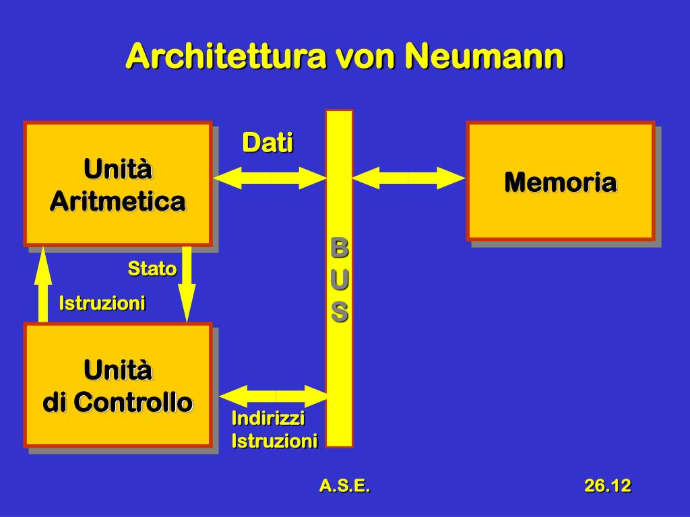

LA STORIA DELL'INFORMATICA

L’architettura di Von Neumann è un tipo di struttura informatica precoce e influente. Consiste principalmente di chip di memoria in grado sia di contenere che di elaborare i dati.
Ogni chip ha la capacità di eseguire compiti diversi,
a seconda di come è influenzato dall’operazione eseguita prima di esso. In questa architettura, ogni computer avrebbe memoria intesa come memoria di lavoro o memoria principale ,
meccanismi per l’output,necessaria affinché i dati elaborati possano essere restituiti all'operatore, e l’input ,tramite la quale i dati vengono inseriti nel calcolatore per essere elaborati,
un controllo centrale, un luogo per l’aritmetica centrale e l’archiviazione esterna e i bus, dei canali che collegano tutti i componenti fra loro .
I computer con architettura di Von Neumann sono noti come programmi memorizzati.
Ciò significa che il computer non ha bisogno di interruttori esterni o altre influenze per funzionare.
Tutte le istruzioni e i dati sono memorizzati nella memoria ad accesso casuale (RAM).